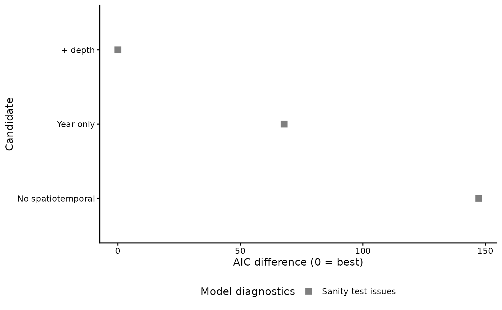

Fits a named list of candidate specifications to identical records and
returns a tidy selection table: the full specification of each candidate, its
convergence and sanity status, in-sample NLL/AIC with delta-AIC and Akaike
weights, and — when cv is on — cross-validated predictive skill expressed
per held-out observation. One function covers the usual selection stages
(component ranking, dropping fixed effects, family, spatiotemporal structure,
mesh resolution), because each is the same operation with a different thing
varied.
Usage
sdmTMB_selection(
candidates,
data,
formula = NULL,
mesh = NULL,
cutoff = NULL,
xy_cols = c("X", "Y"),
family = NULL,
spatial = "on",
spatiotemporal = "iid",
time = NULL,
control = sdmTMB::sdmTMBcontrol(newton_loops = 1),
...,
cv = FALSE,
fold_ids = NULL,
lfo = FALSE,
lfo_forecast = 1,
lfo_validations = 5,
fit_full = TRUE,
complete_cases = TRUE,
cache_dir = NULL,
cache_prefix = "selection",
refit = FALSE,
only = NULL,
n_workers = 1,
future_seed = TRUE,
silent = TRUE,
verbose = TRUE
)Arguments
- candidates
A named list of candidates. Each element is either a formula, or a list with any of
formula,family,spatial,spatiotemporal,mesh,cutoffandtime; anything not set falls back to the corresponding argument below. Names become themodelcolumn. A candidate that sets its owncutoffoverrides a sharedmesh, so a mesh-resolution stage is just another candidate list.- data
A data frame with the response, predictors and coordinates.
- formula
Default formula for candidates that do not carry one.
- mesh
A
sdmTMB::make_mesh()mesh shared by all candidates. IfNULL, a mesh is built per candidate fromcutoffandxy_cols.- cutoff
Default mesh cutoff (km) used when
meshisNULL.- xy_cols
Coordinate columns used to build meshes. Default
c("X", "Y").- family
Default
sdmTMB::sdmTMB()family. No default: supply it here or per candidate, so the choice is deliberate.- spatial, spatiotemporal, time
Defaults passed to
sdmTMB::sdmTMB().- control
An
sdmTMB::sdmTMBcontrol()object.- ...
Further arguments passed to both
sdmTMB::sdmTMB()andsdmTMB::sdmTMB_cv(). Pass anoffsetas the name of a column indata, not as a vector — a vector would misalign whencomplete_cases = TRUEremoves rows.- cv
Cross-validation:
FALSE(default) for none, orTRUE/an integer number of folds.- fold_ids
Optional fold assignment (a vector, or the name of a column in
data) passed tosdmTMB::sdmTMB_cv(). Use it to hold out spatial blocks (e.g. fromblockCV::cv_spatial()) instead of scattered points: random folds measure interpolation, spatially clustered folds measure extrapolation into unsampled ground, which is the harder and more relevant test for a model whose purpose is to integrate over space.- lfo, lfo_forecast, lfo_validations
Leave-future-out cross-validation, passed to
sdmTMB::sdmTMB_cv().lfo = TRUEscores the model on years it has not seen, which is the question an assessment update actually asks.- fit_full
Fit each candidate once on the whole frame, in addition to any CV? Default
TRUE. Needed forAIC,sdmTMB::sanity()and the per-candidate indices inplot(type = "index").- complete_cases
Restrict the data to rows complete for every candidate? Default
TRUE. Seeselection_frame().- cache_dir
Directory for per-candidate
.rdscaches.NULL(default) disables caching.- cache_prefix
Prefix for cache file names, so several selection stages can share one directory. Default
"selection".- refit
Recompute cached candidates? Default
FALSE.- only
Optional character vector of candidate names to compute in this call. Candidates outside it are read from the cache if present and skipped otherwise.
- n_workers, future_seed
Parallel settings for the CV fits.
- silent
Suppress model fitting output? Default
TRUE.- verbose
Report progress? Default
TRUE.
Value
An object of class sdmTMB_selection: a list with table (the tidy
selection table), fits (named list of fitted models or NULLs), cv
(named list of sdmTMB::sdmTMB_cv() objects, or NULL) and candidates
(the resolved specifications). Print it, plot it with
plot.sdmTMB_selection(), and query it with best_candidate().
Details
Identical records
With complete_cases = TRUE (the default) the data are passed through
selection_frame() first, so every candidate sees the same rows and the
likelihood-based columns are comparable. Fit the selected specification to
the full data afterwards.
What the table is sorted by, and why you should not rely on it
Rows are ordered by cv_deltaNLL when cross-validation ran and by
deltaAIC otherwise. Never read the winner off the first row in downstream
code — use best_candidate(), which looks the value up in the column and
skips rows that are not comparable.
Comparability
The comparable column is TRUE only for a candidate that fitted, whose
Hessian was positive definite, that saw the modal number of records, and —
under CV — had every fold resolve and score the modal number of held-out
points. Compare only those rows, and do not quote a delta between two
candidates unless both are comparable: a likelihood from a fit that has not
resolved is not a basis for a comparison, and neither is one computed over a
different set of observations.
sdmTMB::sanity() is reported in its own column but does not gate
comparability. It is a broader battery of warnings — a range longer than the
survey domain, a random-field SD collapsing to zero, a large gradient — that
flags a model worth thinking about rather than one whose likelihood is
meaningless; gating on it would quietly drop the best-fitting candidate from
the comparison. Read it, and treat a sanity = FALSE winner as a reason to
simplify rather than as a row to ignore.
Cost
A cross-validated candidate costs k fits (plus one more when
fit_full = TRUE, which is needed for AIC, sanity and per-candidate indices).
Cross-validating a long ladder is therefore usually the wrong order of work:
rank all candidates by AIC first (cv = FALSE), then cross-validate a
shortlist taken from that ranking with best_candidate(). With cache_dir
set and the same cache_prefix, the second call reuses the whole-frame fits
from the first and pays only for the folds.
Caching and resumability
cache_dir writes two files per candidate — the whole-frame fit and the
cross-validation separately — so an interrupted run resumes instead of
starting over, and a cross-validated call under the same cache_prefix
reuses the fits an earlier AIC ladder already paid for instead of repeating
them. only restricts a call to named candidates so a long ladder can be
spread over several R sessions (a large spatiotemporal fit can exhaust memory
when a dozen of them accumulate in one process).
Examples
# \donttest{
cands <- list(
"Year only" = density ~ 0 + as.factor(year),
"+ depth" = density ~ 0 + as.factor(year) + depth_scaled,
"No spatiotemporal" = list(spatiotemporal = "off")
)
sel <- sdmTMB_selection(
cands, data = sdmTMB::pcod,
formula = density ~ 0 + as.factor(year) + depth_scaled,
cutoff = 25, family = sdmTMB::tweedie(), time = "year",
spatial = "on", spatiotemporal = "iid"
)
#> Candidate 'Year only': fitting.
#> Candidate '+ depth': fitting.
#> Candidate 'No spatiotemporal': fitting.
sel
#> <sdmTMB_selection> 3 candidates, AIC only
#>
#> model n crashed converged sanity AIC deltaAIC AICweight
#> + depth 2143 FALSE TRUE FALSE 13086.73 0.00000 1.00000e+00
#> Year only 2143 FALSE TRUE FALSE 13154.57 67.84453 1.85245e-15
#> No spatiotemporal 2143 FALSE TRUE FALSE 13234.01 147.28353 1.04181e-32
#> comparable
#> TRUE
#> TRUE
#> TRUE
#>
#> 3 of 3 rows are comparable.
#> Best (AIC): + depth
#> 3 comparable row(s) fail sanity(): they are still compared, but check
#> them before trusting the winner.
plot(sel)

best_candidate(sel)
#> [1] "+ depth"
# }